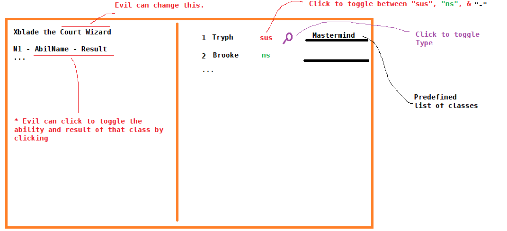

I use a lot of my nighttime for that, first doing my action, then skimming the chat of the day again + compare it with my notes, then change my night action based on my reads, if there is enough time.
Basically helping BD with their logs or giving them more time to log it would give BD an immense advantage (e.g. FoL a.k.a ToL on the forums had to give BD major disadvantages because you have so much time to reread and reread again).
ToL is basically unplayable for me because I’m so used to wolfreading people who know what they’re doing without needless WIFOM, so I guess this isn’t that relevant for me.
More importantly, it’s not that mechanical deduction is bad in ToL, it’s that the mechanical deduction is limited to the point where there’s never anything more interesting than a single-chain logical inference happening commonly.
still like ToL, it’s just I prefer FM
1 Like
The game would actively be unwinnable for the wolves if phase lengths were doubled, I gaurentee you.
3 Likes
In my opinion the game is already unwinnable for evil if all 16 players were to log like myself. But it’s too tedious, so most people don’t do it, even the ones who understand the most complex of mechanical interactions. And now not even I do it.
Hence, this thread.
the mechanical deduction is limited to the point where there’s never anything more interesting than a single-chain logical inference happening commonly.
Did you mean to say mechanical deduction is too large a factor, as opposed to “limited”? Because I would agree with that completely.
When I say limited, I mean it’s limited in complexity. The problem is you can’t exactly keep the multiple abilities AND conversion but at the same time limit the clues that the people are being given.
I am fine with complex mechanics and all the numerous clues (well, proofs) they provide. As long as these clues are obvious to everyone so that there’s no advantage to excessively tedious logging. Because that means the best playstyle (as in, the most likely to win you the game) is also the most boring.
I don’t think I understand why you are calling the mechanics limited. The consensus seems to be they are complex, or at least that there are many possible interactions even if ultimately you’re just clicking a button.
Delete Fool
4 Likes
I actually agree, when you log things during the day you miss out on key points and information.
For instance, when king/ prince / mystic are bombarded with claims to log - which takes a long time - they get a lead and waste a day not paying attention to the chat.
Unfortunately, most people who see this post are from fm and don’t really care about the ToL changes. So a good ToL change like this will rarely ever occur
2 Likes
But thank you for all the class creation time you put into this game and hopefully it did something. Maybe create / code a social deduction game yourself in the future and use those classes and designs and your own changes where it will 100% be implemented
2 Likes
Actually, I like this idea and have thought of something like this before, but been careful to present it because it has to be perfect. The original idea of logs was never meant to be this tedious – that was a meta that evolved to super scumread your log formatting. This destroys new players and gets tedious for vets. It feels like you’re doing homework.
I was thinking about a “minesweeper” style logs that I may get further opinion on soon in Discord. You click to toggle keywords and such. Semi-auto, but you can still make adjustments. You know Minesweeper how you have bomb, not bomb, or “?” – something similar. sus, ns, -. You can click to toggle these with ease and speed. Maybe a class and type beside it.

Then even if you rush your logs or you’re new at them, they’re always consistent at the very least.
And Why Does Title Need 15 Characters?
For sufficient context – no one likes being clickbaited.
4 Likes
It’s exciting that you are already considering this! That would be amazing if implemented. The one change that would single-handedly make the biggest positive impact on the game imho
1 Like
Btw I think we were using different definitions of “mechanical deduction”, I just meant making inferences based on how abilities interact, but perhaps you meant “rigid logical analysis” in general
1 Like
I’ve been playing ToL again btw lmao
1 Like
10/10 would recommend playing TOL with Icibalus
The GUI and deathnote doesn’t lag for me anymore, also cool quill pen cursor lol. I wonder what kind of graphical updates they did to fix the deathnote lag? It was hard to draw curves, I had to draw super slow before
It was a back-end update. Most people didn’t notice  thanks for noticing! I’m a back-end dev, at heart, although I’m full-stack.
thanks for noticing! I’m a back-end dev, at heart, although I’m full-stack.
4 Likes